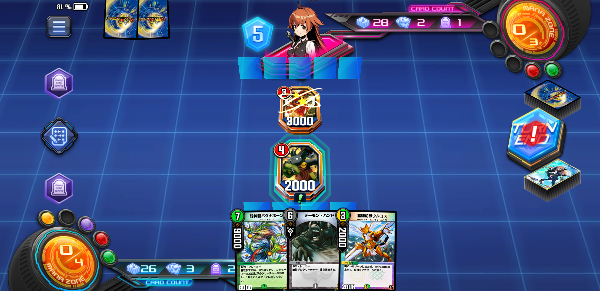
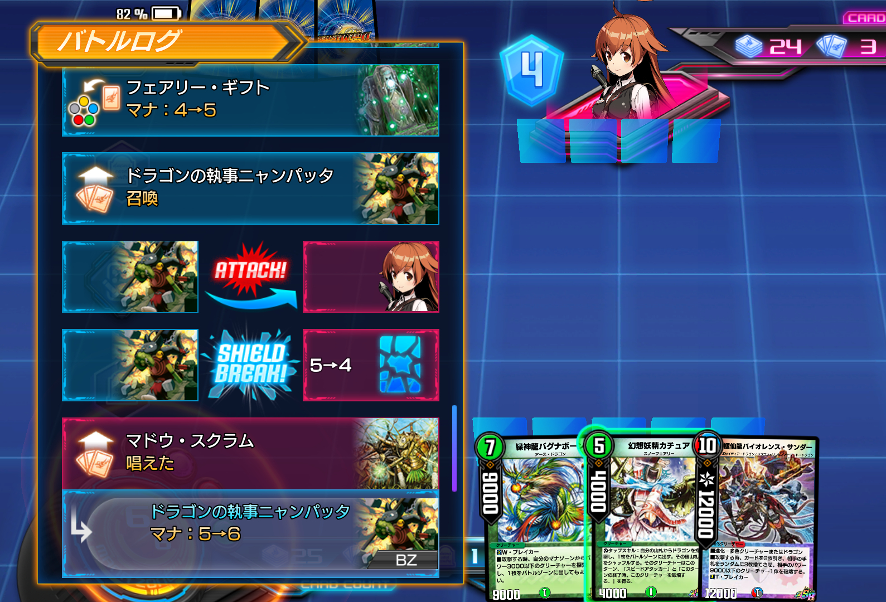
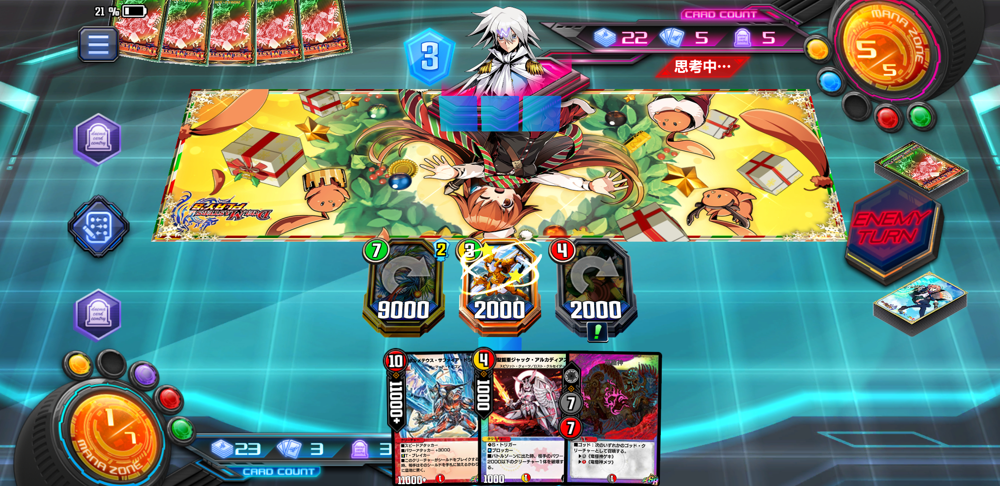
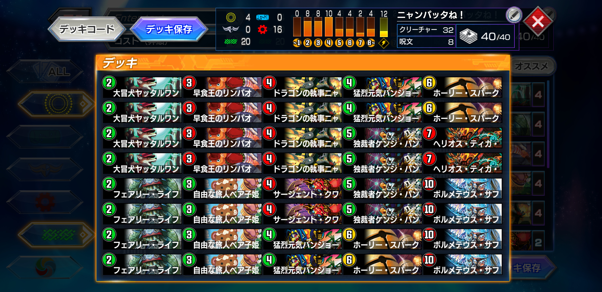
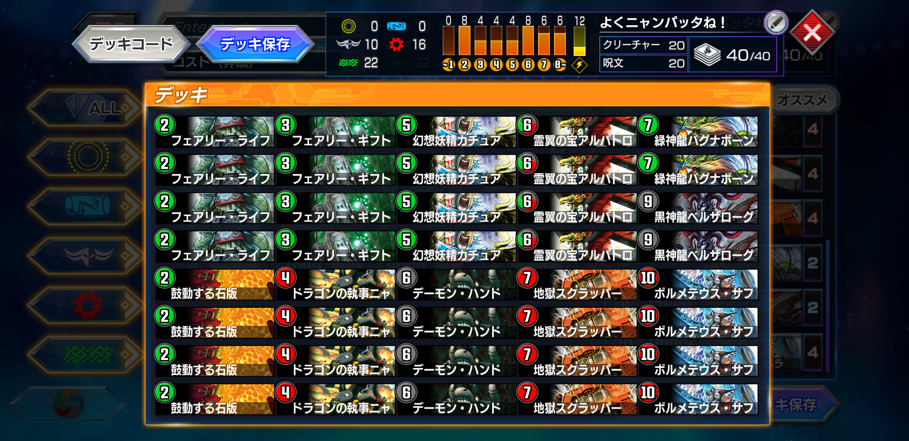
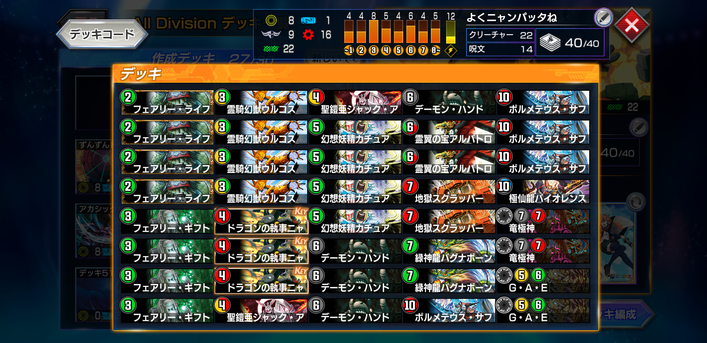

第三回ニャンパッタ研究報告会
概要
ドラゴンの執事ニャンパッタは2006年12月26日、かの超新星アポロヌス・ドラゲリオンなどと一緒に第22弾カードパック「超神龍雷撃」に収録されたドリームメイトである。必ず攻撃しなければならないが、もし次の自分のターンまでバトルゾーンに残ることができれば、自身を破壊し手札から好きなドラゴンをバトルゾーンに出すことができる。
ドラゴンにはかなり強力なクリーチャーが多いため、ハイリスク・ハイリターンな戦術をとることができるデッキの組み甲斐のあるクリーチャーだ。
そんなニャンパッタがTCG版と同様に、アポロヌス・ドラゲリオンなどと同時にデュエプレ第7弾カードパック「超新星爆誕」にめでたく収録された。同弾には強力なドラゴンに恵まれ、レアリティもレアに昇格。紙とほぼ変わらない能力でのデュエプレへのエントリーに、懐かしい気持ちになったデュエリストも多いだろう。
ただし、先述したようにニャンパッタは「デッキの組み甲斐のあるクリーチャー」である。回りくどい言い方にピンときた、もしくは言われなくともわかる、という人が多いかもしれない。相当のロマンクリーチャーである。
扱いの難しさ
ドラゴンを何でも１体タダで場に出せるという派手な能力のわりに、ニャンパッタをランクマッチで見かけることは少ない。なぜなら、ニャンパッタの能力を発動させることはかなり難しいからだ。
コスト4のスピードアタッカーで、必ず攻撃しなければならない。そして次の自分のターンまで生き残るということは、
- 相手のバトルゾーンにパワー2000以上のクリーチャーがいない
- ニャンパッタが倒せるクリーチャーがいない場合、シールドを１枚割りシールドトリガーで除去されてはいけない
- 相手の呪文で除去されない
- 自分の手札に危険なドラゴンはない、と相手が思っている
- 相手と約束をしてニャンパッタの破壊を1ターン待ってもらう
必要がある。
4ターン目というのはどんなデッキでもクリーチャーがバトルゾーンに出始める頃合いだ。そしてコスト4のクリーチャーはコスト論的にはパワー4000が妥当とされ、パワー2000のニャンパッタはまず基礎パワーの時点で劣勢である。聖騎士ヴォイジャー、ボルシャックバディドラゴン、西南の超人など、場に居座るクリーチャーたちにはパワー3000台も多く、これだけでまず機能しなくなる。実質相手のバトルゾーンにクリーチャーがいると破壊されると言っても過言ではない。

↑非常にのどかなバトルゾーンだが、詰んでいる
ではクリーチャーを4ターン目近くになっても展開しないデッキとなると、自然と除去を多く搭載して相手を迎え撃つデッキとなり……エターナル・ガードを始めとした多くの除去呪文にさらされることになる。
また多くの場合ニャンパッタはシールドを攻撃することになるが、その1枚のシールドトリガーで除去されてもいけない。ニャンパッタは次の自分のターンまで場にいる必要があるため、大多数のシールドトリガーの的になってしまう。

4コママンガか！！！！
そして自身の「〜ドラゴンを出しても良い」という如何にもなテキスト。相手からすればどうしても除去したいクリーチャーになる。もうちょっとボカした言い方にはできないものだろうか。「もしかしたら、何かが起こる……かもね？？」くらいに。
破壊が前提という儚さ
つまりはクリーチャーのなかでも特に除去されやすい部類に入る。また悲しいことに、無事に生き残って効果が発動したとしても、自身の破壊と引き換えに手札のドラゴンを1体バトルゾーンに出すため、アドバンテージ的には-1が確実である。さらに多くの場合相手のシールドをブレイクするため、相手の手札は増えてこちらの手札は減るという形で、序盤にアドバンテージに2の差が開いてしまう。これを取り返すには、何としても強力なドラゴンを5ターン目に早出しするしかない。
幸い、デュエプレにはボルメテウス・サファイア・ドラゴンを始めとした強力なドラゴンがTCG以上に多いため、成功時の成果はなかなか大きい。
ブラフ
またその思わせぶりなテキストから、ブラフとして使うとかなり強力である。相手からすれば、なんだかんだでどうしても除去できない場合は手札破壊を狙う選択肢も出てくるし、手札の強力な呪文をむしろ後続のドラゴンに使うべきか……と悩むこともある。それを逆手にとり、他の小型クリーチャーと一緒にただただ殴るデッキも作れなくもない。
……が、大抵の場合、ブラフ役が成功したとして、パワー2000の必ず攻撃しなければならないクリーチャーはカモであり、相手が困ることはニャンパッタの効果が発動する確率よりも少ない。ただただ相手がホッとするばかりである。
使いたくなる能力をもっている
ここまでニャンパッタの悪いところばかりに注目してしまったようだが、決して悪いカードではない。能力の発動が難しいだけに決まったときの爽快感と驚きはひとしおであり、デュエルを（かなり）スリリングなものに変えてくれるクリーチャーである。このクリーチャーを活躍させるためにデッキを考えるだけでデュエプレのプレイ時間がさらに延び、また睡眠時間が減る。
またデュエプレで実装されたボイスも見逃せない。ドリームメイト特有のかわいらしいボイスは使うプレイヤーの心を癒やしてくれる。効果発動時のボイスもかわいいが、パンダネルラからうっかり踏み倒された時の「やっちまった感」もなんとも言えない。また話は変わってくれるが、ニャンパッタでのダイレクトアタックボイスの煽り性能はかなり高い。
というわけで、自分でもニャンパッタを軸にしたデッキを7弾の頃から作っていた。ちなみにこの記事が「第３回」なのは、３回デッキを作り直しているからである。
ニャンパッタは発動こそ難しいが、ボルメテウス・サファイア・ドラゴンという非常に強力なドラゴンが用意されていること、環境によっては局所的に刺さるデッキが実はあることも理由になる。
この記事もまあまあ長くなってきたが、ぜひ今後のニャンパッタ対策のために読んでもらえると嬉しい。
7弾環境
まだドリームメイトが登場して間もない7弾環境に制作した。この頃のドリームメイトはウルコスもジャンガルジャンもボルパンサーもおらず、パンダネルラのビート性能の高さは注目されていたものの、周辺カードがまだ足りていない状態だった。公式大会決勝進出も果たしているが、そちらはドリームメイトを削れるだけ削ったトリガービートの体裁となっていた。
アポロヌス・ドラゲリオン、ツヴァイランサー、グレートメカオーによるビート殺しデッキ、そしてデアリカチュアがtier1に並んでおり、ドリームメイトでそれらを突破するにはどうしたらいいか……夜も寝られずに考える日々を送っていたときのことだ。
ヤッタルワン、バンジョーと組み合わせたパンダセットにベア子姫、サージェントクワガタンの除去をいい感じに当てていってもなかなか間に合わない。最速でパンダを決めるのは当然として、そこにスピードアタッカーであるリンパオが絡むとかなり勝てる。
……
というわけで、リンパオに加えニャンパッタを4枚搭載したビンビンスピードアタッカーデッキにしてみた。ニャンパッタをドリームメイトサポートを受けられるコスト4スピードアタッカーとして組み込むことで、パンダネルラと合わせて最強のトップ解決デッキになる！はずだった。
実際のところニャンパッタがひたすら足を引っ張る形にとどまった。如何せん必ず攻撃しなければいけないスピードアタッカーは場持ちが悪く、召喚したところで無駄死にしてしまう。特にコンセプトのパンダから出てしまうと最悪である。踏み倒しによって常に場にドリームメイトを維持できるのがパンダが強い所以なのだが、ブロッカーが立っているところにわざわざ自爆しに行ってしまうし、不要な攻撃でトリガーを踏んでしまう。なぜあのボイスが用意されているのか、ここで納得した。
また、まだドリームメイトのマナブースト手段がヤッタルワンしかいない時期であり、ドローソースもないデッキにサファイアを突っ込むのはネタでしかなかった。5ターン目までにコンボパーツ2枚を手札に確保できる確率は約40%であり、それがそもそも5割を切っているのにあのニャンパッタ自身の成功率である。
もっというと、ニャンパッタとサファイアを手札にキープするとどうしてもパンダをマナに埋めなければならなくなり、パンダプランも潰してしまう。両方が初手で来れば安定するパンダプランを選択することになり、じゃあなんでサファイア入れてんだって話になる。ランクマでの実戦レベルにならない上にカジュアルでもあんまり楽しくないのでボツにした。
◆ニャンパッタの成功率 : 1割以下
8弾環境
ドリームメイトがジェネラルクワガタン、ボルパンサー、そしてウルコスを獲得し環境トップに躍り出た。最初は喜んだものの、環境に居座ったのは相変わらずのできるだけドリームメイトを削ったトリガービートであり、また先行後攻で勝率が大きく変わるデッキだった。また同時にアガピトスとキングダムゲオルグを獲得した天門が環境を制圧しており、7弾とは別の方向からビートを抑制し続けていた。
が、どちらも4ターン目付近は手札補充とマナブーストを必要としており、ここを付け入るスキと見た。
……

環境構築では先行60%で色事故込みのエターナル・ガード以外対処できない、2マナブーストから3ターン目ニャンパッタを飛ばすことにした（トリガーが怖いがドリメのスパークは効かず、天門はトリガーが8枚程度なのでワンパン率はそこまで高くない）
さらにサブプランとしてマークの減ったカチュアを搭載。何ならニャンパッタがブラフ兼デコイとして先に除去の的になってくれるうえ、カチュアで困る「手札にサファイア来ちゃったよ事故」を活用することができる。ニャンパッタとカチュアの8枚を切り札にすることで4~6ターン目のサファイアの登場率は上がる。
さらに救済者アルバトロスが登場したこともあり、序盤に除去されまくったニャンパッタとカチュアを、カチュアのバグナボーンからのアルバトロスで改めてぶっ放すという悶絶おしゃれムーブまで搭載した。このデッキからニャンパッタがダイレクトアタックを担当することが増え、あの煽りボイスを耳にすることも多くなった。
あくまでカチュアはサブプランである。お間違えのないように。
が、しかし。
カチュアを採用する以上All Divitionでしか成立しないこと、そのAllで黒緑速攻・青単ツヴァイが猛威を奮っており、完全にそれらのデッキのレート引換券でしかなかったため勝率は上がらなかった。
さらにゲオアガピ天門相手には、アガピとエリクシアを展開すればサファイアをいなせる、レモンを立ててゲオルグで殴ればいいなど、ニャンパッタが成功してもそこからのサファイア自体がそれほど刺さらないことが発覚してしまう。
さらにさらに唯一の有利対面であるトリーヴァドリメはジェネラルクワガタンのナーフでデッキ消滅。代わりのリースドリメには完全に間に合わずこちらも明確な不利対面になってしまった。どうして……。
EX環境になれば驚天の超人を仮想敵に戦える……かと思いきや、Allには驚天はそこまでいない。遭遇したとしても、まるでニャンパッタを狙いうちにしたかのようなデッキ構成からそこまで有利に戦えたものではなかった。
しかし、最終的には環境の波に飲まれたものの、ニャンパッタでしかできない動きができる、上振れればtier1にも勝てなくもないところが気に入ってキープ。カジュアルでもかなり盛り上がったので満足。
◆ニャンパッタの成功率 : 3割程度（ただしダイレクトアタックに貢献）
9弾環境
フェアリー・ミラクルによる5色デッキなどが強化された9弾環境。まだこれといった鉄板デッキが登場しておらず、様々なデッキが環境に入り乱れている。自分としてはまだニャンパッタを使う気はなく、いつものドリームメイト速攻でランクマッチに挑戦していた。が、プラチナ2あたりから徐々に勝率を落とし始めており、どうにか突破口を広げたい気分だった。
ときに、友人とのルームマッチで除去寄りの5Cデッキにニャンパッタが刺さらなくもないことを発見。新たに光を入れた4Cニャンパッタを制作した。

速攻・ビート・コントロールの入り乱れる環境では最速ニャンパッタを狙うのを一旦諦め、ウルコスやGAE、ゲキメツで対応力を高めることにした。基本的にはカチュアからスタートし、バグナボーンやアルバトロス、そしてゲキメツでニャンパッタをフル出勤させる。これにより、手札・墓地・マナから「除去しなければサファイアを出しかねないスピードアタッカー」を投げまくって勝つ戦法を取り、見事マスター到達。
……が。
マスターランクに到達したところから急激に勝率を落とす。
アポロやツヴァイ、メカオー、黒緑といった完成度の高い苦手対面が一気に増え、さらに得意な5C・4C相手にも苦戦を強いられる。特にニャンパッタで出したサファイアをゲートサファイアで返されることがかなり多くなってしまい、もはやマスター帯ではどのデッキにもニャンパッタが刺さっていない。
むしろ遊び心で入れたカチュアからのバイオレンスサンダーの方が活躍しており、黒緑以外のデッキにかなり有利に立ち回ることができた。
そして気づけばニャンパッタの枚数を減らし始めていることに気づき、今に至る。文章に書き起こせば自分のデッキの問題点を洗い出せると思い筆を執ってみたが、そもそもニャンパッタを今使う必要がないということに気づいてしまった。???＜なんでこんなときに〜！
◆ニャンパッタの成功率 : 5割（ただしそもそもの使用率は低下）
現状（2021.6.17）としては、まだニャンパッタの出番ではないのではなかろうか。ということでデッキ構築を一旦止めようかと思う。特にあの「ジャックアルカディアス」とかいう露骨なニャンパッタメタカードの存在が痛い。どう考えてもやりすぎである。しかし裏を返せば、ニャンパッタはわざわざオリジナルカードで対策をされるほどの要注意カードということになるだろう。
相性の良いカードも少しずつ登場しており、いずれ環境が固まったとき、ニャンパッタが本気を出すことは確実だ。特にデッキに入れる予定はないが、いざというときのために、ニャンパッタ研究は続行していく所存である。